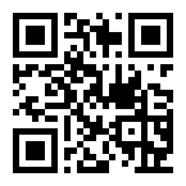

THE FOUR QUESTIONS
- 1 What do you think?
- 2 What's shaped your thinking on that?
- 3 How are you feeling about it?
- 4 What would make it better?
A simple tool to prepare for better conversations, so you listen first, and then respond.

A good conversation across difference has a shape. First you understand the other person. Then you make your own point, shaped by what you heard.
That order matters. When you listen first, two things happen: the other person feels understood, and you actually learn something that makes your own point land better. Most conversations skip straight to the second part. This one slows down and does the first part on purpose.
Same four questions, used both ways. Tap Listen and Respond to see how.
This is the first half of a conversation: using the four questions to understand the other person, before you say what you think.
Ask the questions below one at a time. After each answer, say back what you heard in your own words, then ask one follow-up out of genuine curiosity before moving on. Don't rush.
The follow-up question is the heart of it. You can't ask a real follow-up about something you weren't truly hearing, so it's the surest sign you're actually listening, and it's what makes the conversation more interesting for you, too.
This is the second half: once you've understood the other person, you make your own point, using the same four questions on yourself.
Answer them for the other person, shaped by what you just heard. Then keep the conversation going: hand it back, ask "What do you think?" and listen again.
That hand-back is what keeps it a conversation instead of a closing argument. You're not trying to win. You're keeping the fire going.
The opening. You're inviting the other person to put their view on the table, in their own words, before anyone argues.
Ask it openly and then get out of the way. The point isn't to set up your rebuttal, it's to let them lead and to signal that you genuinely want to hear where they land. Resist the urge to react to the first thing they say.
Other ways to ask it: "Where do you land on this?" · "How do you see it?"
Now it's your turn to say where you land, plainly and honestly.
You've heard them out, so you can make your point without bracing for a fight. Say what you actually think, shaped by what you just learned. You don't have to agree, and you don't have to pretend the disagreement away.
Other ways to say it: "Here's where I come down." · "This is how I see it."
This goes underneath their opinion to the experiences, stories, and influences that put it there.
It's phrased carefully. "What's shaped your thinking?" invites the story behind a view, not a defense of it. Questions like "what makes you say that?" can make people feel they're on trial. This one keeps it warm, and it works whether they have firsthand experience or simply strong convictions.
This is the step to slow down on. If the first answer is general, stay with it, and ask one gentle follow-up out of real interest.
Other ways to ask it: "Has there been a moment that stuck with you?" · "How did you come to see it that way?"
Share what shaped your view: the experience, the story, the thing you read or lived that put you where you are.
This is where your point gets real. An opinion is easy to argue with; a story is harder to dismiss. And having just heard what shaped their thinking, you can offer yours in the same honest spirit, as one more piece of the picture rather than a counterattack.
Other ways to say it: "Here's what got me thinking this way." · "Something happened that stuck with me."
This reaches past the argument to the emotion underneath it: not just what they think, but how it sits with them.
Feelings are where a lot of the real understanding lives. Someone's position tells you where they stand; how they feel tells you why it matters. And naming a feeling is often how a person makes sense of a tangle of experience, so this question can help them find their own clarity, not just share it with you.
Ask it gently, and don't push if it feels too direct. Sometimes "how are you feeling about it?" is perfect; sometimes "what's your gut on it?" lands more easily. Either way, you're inviting them to be a little more open than a debate would allow.
Other ways to ask it: "How does that sit with you?" · "What's your gut on it?"
Now say how you feel about it, honestly.
This is often the most disarming thing you can do. After hearing how they feel, naming your own feeling, not just your argument, keeps you two people rather than two positions. It signals you're in this as a person, not a debater. You don't have to perform an emotion you don't have; just be straight about how it actually sits with you.
Other ways to say it: "Here's how it sits with me." · "Honestly, my gut on it is..."
The forward-looking question. It turns the conversation from the problem toward a possible way through, in their eyes.
Ask it openly, with no agenda of your own yet. It isn't a demand or a debate, just an invitation to picture a better version of the situation. Often people are softer and more constructive here than anywhere else in the conversation, and what they say can surprise you.
Other ways to ask it: "What would a good outcome look like?" · "Where could we go from here?"
Now offer your own sense of what would make things better, shaped by what you just heard them say.
This is where the two halves can meet. You've heard what a better outcome looks like to them; now add yours. Very often there's surprising overlap here, even after disagreeing about everything else, and that shared ground is exactly where a real conversation keeps going. Then hand it back: "What do you think?"
Other ways to say it: "Here's what I think would help." · "Here's what I think could help."